Zinnenprikkelende Oosterse gerechten, aan de rand van het bos in Den Dolder.
Dinsdag t/m zondag geopend vanaf 17:00
Stap over de drempel naar het Oosten
Zodra je binnenloopt bij Yumisan waan je je in een andere wereld. Een wereld waar de rijke culinaire geschiedenis van het Oosten de moderne Westerse wereld omhelst en ermee samensmelt.
Dat zie je direct. Dat proef je. Bij ieder gerecht. Bij Restaurant Yumisan.
Ben je toe aan een culinair avondje uit? Aan de rand van het bos, maar met parkeerplaats voor de deur, combineert Yumisan een luxe ambiance met een culinair hoogstaand menu.
De inrichting van het restaurant is geïnspireerd door Japanse kunst en net zo modern als het menu. Tijdens een zomerse avond is het ook heerlijk vertoeven op ons smaakvol ingerichte en verwarmde terras.
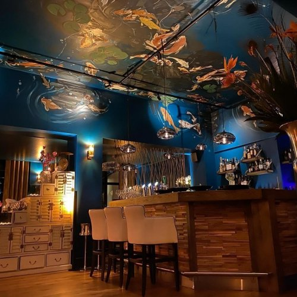
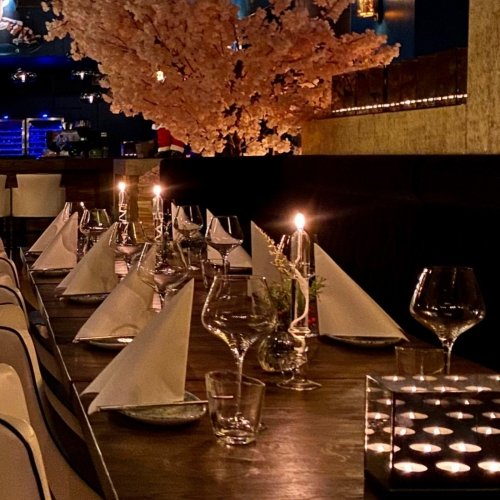
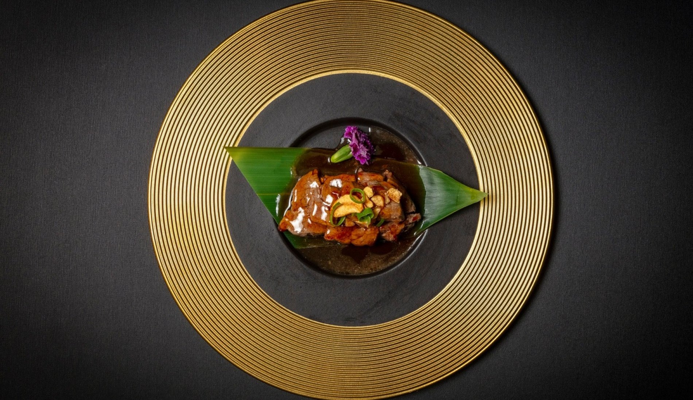
Aziatische keuken zoals je hem nog nooit beleefde
Dankzij meer dan 25 jaar horecaervaring weet eigenaar Jack Gao je bij ieder gerecht te verrassen. De menukaart is dan ook geïnspireerd op de kennis die hij opdeed als chef-kok in de Chinese haute cuisine en de meer traditionele Japanse keuken. Deze klassieke gerechten geeft hij een eigentijdse twist die je smaakpapillen uitdagen en oogstrelend worden geserveerd.
Op ons menu vind je klassieke Oosterse gerechten die van onze chef-kok een moderne twist krijgen of die we combineren met ingrediënten uit de Westerse keuken. Zo is er een ruim assortiment aan sushi die je nergens anders tegenkomt; mooi in balans qua smaak en structuur. Ook Mediterrane en Noord-Europese ingrediënten tref je aan in onze vlees- en visgerechten, uitgebalanceerd met de kruidencombinaties die Zuidoost-Azië typeren.
Jij en ik, hier
De naam van ons restaurant zegt alles, Yumisan betekent namelijk: ‘Jij en ik, hier’. Zeg nou zelf: van lekker eten word je blij en als jij je goed voelt, dan deel je dat toch het liefst met degenen om wie je het meeste geeft?
Vergeet je dagelijkse beslommeringen en geniet tijdens je avondvullende diner bij Yumisan van de gastvrijheid, de spraakmakende gerechten en de uitstekende bediening. Ben jij klaar om je te laten verrassen?
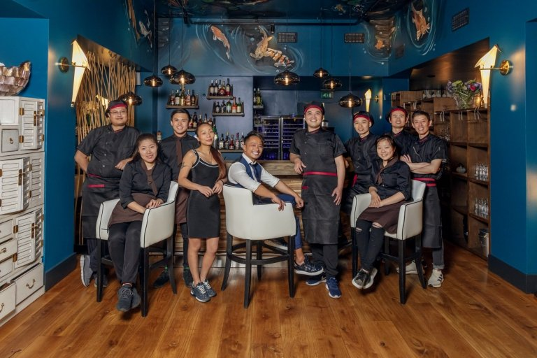
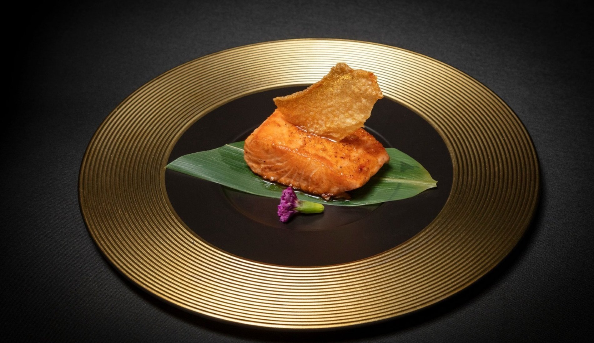
Yumisan Tasting Menu
Laat u meevoeren door onze chef op een unieke reis van smaken. Te bestellen vanaf 2 personen.
- 4gangen55
- 5gangen65
- 6gangen75
- 7gangen85
- 8gangen95
Impressie
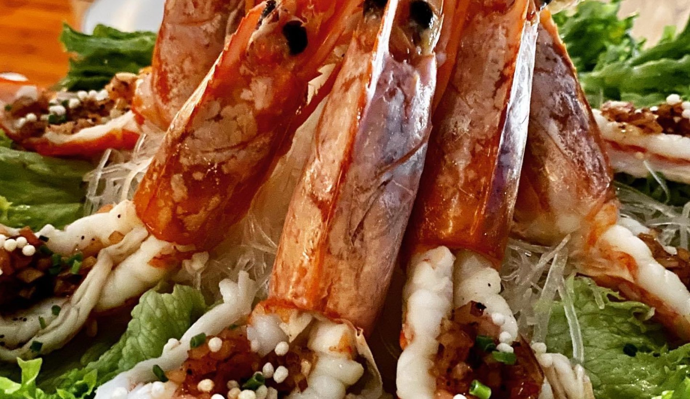
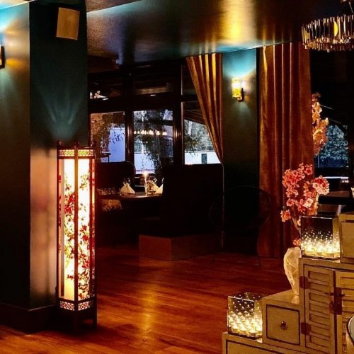
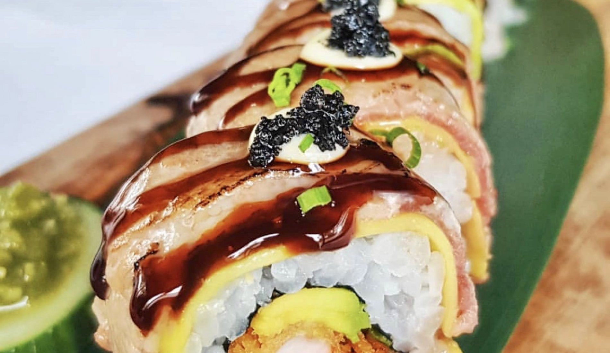
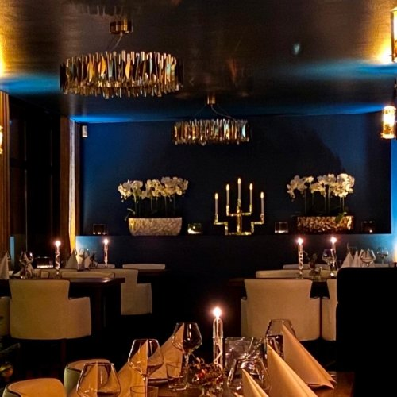
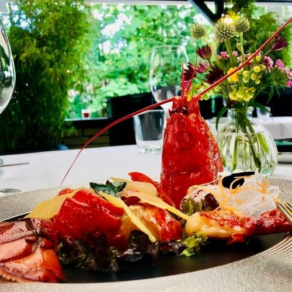
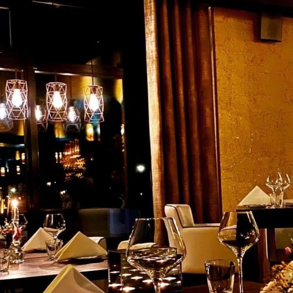
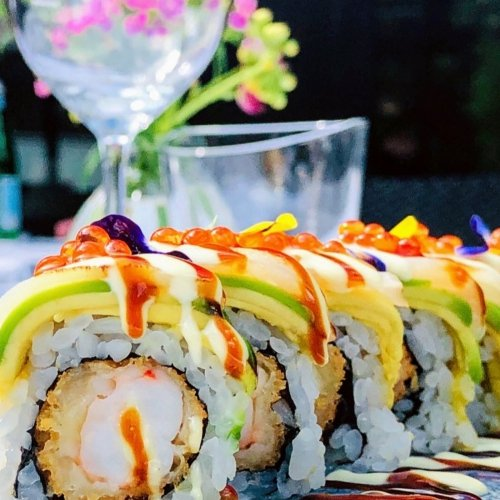
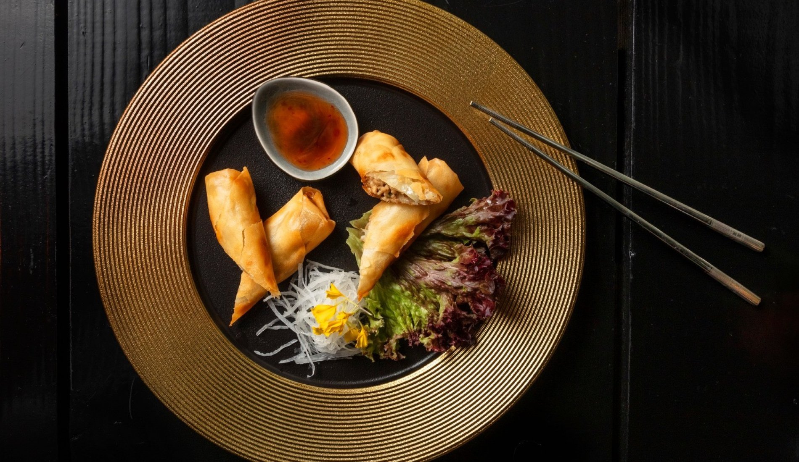
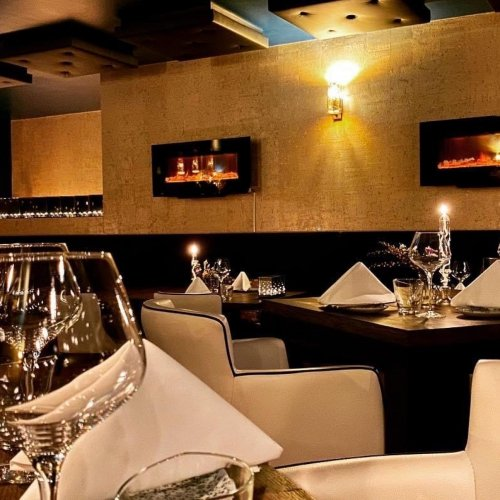
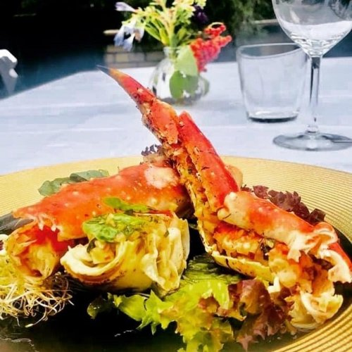
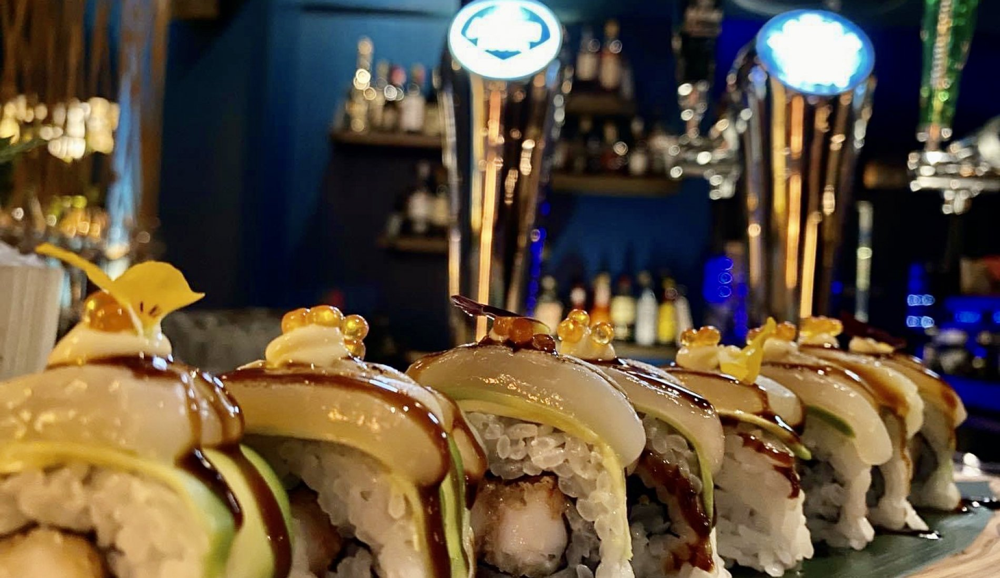
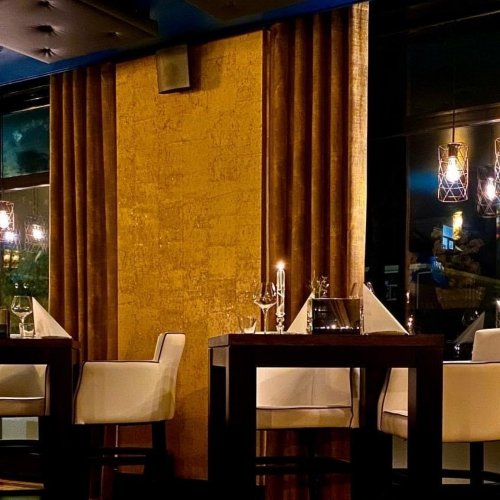
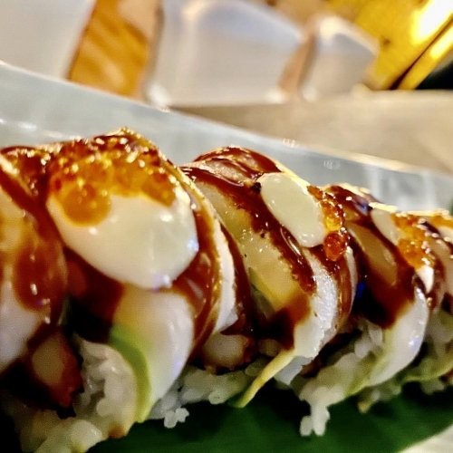
Reserveer je tafel
Of je nu met zijn tweeën komt of met een grote groep, we willen dat jouw ervaring met Yumisan nog lang voor een glimlach op je gezicht zorgt. Daarom horen we graag van je wanneer je bij ons wilt komen genieten. Heb je speciale wensen? Geef dat dan ook door bij je reservering.
Zo hoef jij je nergens druk om te maken en zorgen wij voor jouw perfecte avond uit!
Zoek jij een leuke baan?
Full-time & part-time personeel in de bediening gezocht.
We zijn op zoek naar spontane en flexibele medewerkers die ons team komen versterken.
- Vanaf 16 jaar
- Horeca-ervaring is een pluspunt
Geïnteresseerd? Je kunt direct solliciteren via het formulier, of bel naar 030 633 6189.
Locatie & contact
Yumisan restaurant is gevestigd aan de rand van het winkelcentrum in Den Dolder, met uitzicht op de bosrand.
YumisanDolderseweg 77
3734 BD Den Dolder
Openingstijden restaurant
| Maandag | gesloten |
|---|---|
| Dinsdag | 17:00 – 22:00 |
| Woensdag | 17:00 – 22:00 |
| Donderdag | 17:00 – 22:00 |
| Vrijdag | 17:00 – 22:30 |
| Zaterdag | 17:00 – 22:30 |
| Zondag | 16:00 – 22:00 |
Openingstijden keuken
| Maandag | gesloten |
|---|---|
| Dinsdag t/m donderdag | 17:00 – 22:00 |
| Vrijdag en zaterdag | 17:00 – 22:30 |
| Zondag | 17:00 – 22:00 |
6 dagen per week geopend